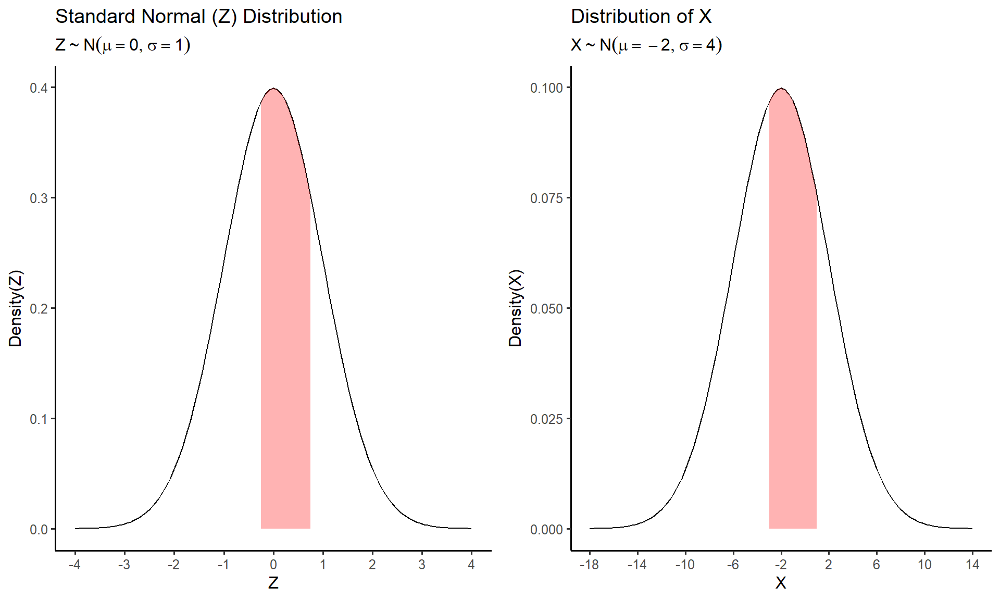
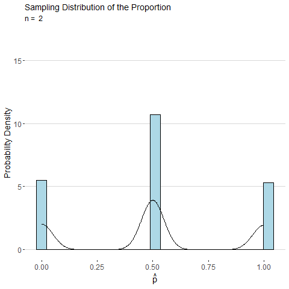
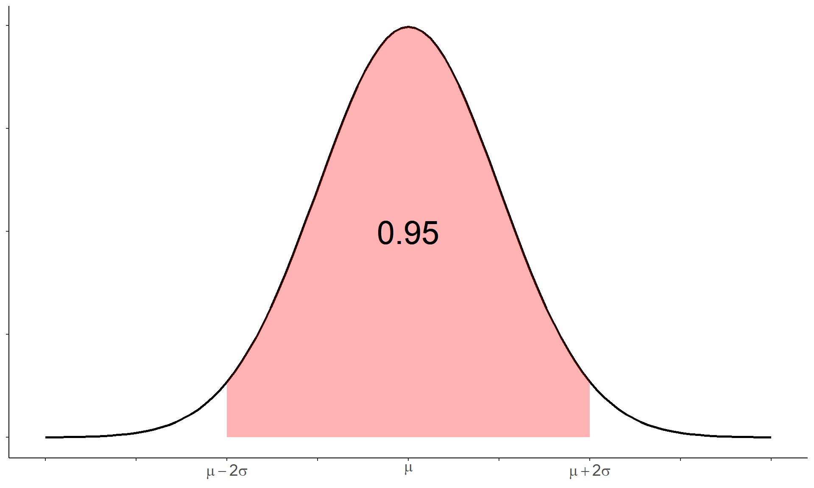

Week 8 Notes
STAT 251 Section 03
Lecture 15 Monday, Feb.26th 2024
The normal distribution revisted
We can also talk about the normal distribution as a family of probability distributions. As before, the normal distribution has two parameters \(\mu\) - the location parameter, and \(\sigma\) the “spread” parameter. The normal distribution has the following probability density function
\[ f(x) = \frac{1}{\sigma \sqrt{2\pi}} \cdot e^{\frac{-(x-\mu)^2}{2\sigma^2}} \]
Finding probability from the normal distribution is not as straight forward as the examples we did earlier. we cannot easily extrapolate probabilities from the graph of a normal distribution. While we may use the empirical rule to identify the approximate quantiles of normal distribution, finding exact probabilities would require us to use calculus as we have said before. For example, suppose \(X\) is normally distributed with mean \(\mu\) and standard deviation \(\sigma\). To find the probability \(P(a\leq X\leq b)\) we would need to compute:
\[ P(a\leq X\leq b) = \int_{a}^{b} \frac{1}{\sigma \sqrt{2\pi}} \cdot e^{\frac{-(x-\mu)^2}{2\sigma^2}} \]
However, these skills are outside the purveiw of this course. Luckily, the normal distribution is used so frequently in statistics that precomputed tables of probabilities are usually available. These tables are often referred to as \(Z\) tables because they are based on the standard normal distribtion. In addition, because the normal distribution is symmetric, we usually only need to compute the probabilities for either the positive or negative half of the distribution. Here is an example of a \(Z\)-table
| Z | .00 | .01 | .02 | .03 | .04 | .05 | .06 | .07 | .08 | .09 |
|---|---|---|---|---|---|---|---|---|---|---|
| 0.0 | 0.500 | 0.504 | 0.508 | 0.512 | 0.516 | 0.520 | 0.524 | 0.528 | 0.532 | 0.536 |
| 0.1 | 0.540 | 0.544 | 0.548 | 0.552 | 0.556 | 0.560 | 0.564 | 0.567 | 0.571 | 0.575 |
| 0.2 | 0.579 | 0.583 | 0.587 | 0.591 | 0.595 | 0.599 | 0.603 | 0.606 | 0.610 | 0.614 |
| 0.3 | 0.618 | 0.622 | 0.626 | 0.629 | 0.633 | 0.637 | 0.641 | 0.644 | 0.648 | 0.652 |
| 0.4 | 0.655 | 0.659 | 0.663 | 0.666 | 0.670 | 0.674 | 0.677 | 0.681 | 0.684 | 0.688 |
| 0.5 | 0.691 | 0.695 | 0.698 | 0.702 | 0.705 | 0.709 | 0.712 | 0.716 | 0.719 | 0.722 |
| 0.6 | 0.726 | 0.729 | 0.732 | 0.736 | 0.739 | 0.742 | 0.745 | 0.749 | 0.752 | 0.755 |
| 0.7 | 0.758 | 0.761 | 0.764 | 0.767 | 0.770 | 0.773 | 0.776 | 0.779 | 0.782 | 0.785 |
| 0.8 | 0.788 | 0.791 | 0.794 | 0.797 | 0.800 | 0.802 | 0.805 | 0.808 | 0.811 | 0.813 |
| 0.9 | 0.816 | 0.819 | 0.821 | 0.824 | 0.826 | 0.829 | 0.831 | 0.834 | 0.836 | 0.839 |
| 1.0 | 0.841 | 0.844 | 0.846 | 0.848 | 0.851 | 0.853 | 0.855 | 0.858 | 0.860 | 0.862 |
| 1.1 | 0.864 | 0.867 | 0.869 | 0.871 | 0.873 | 0.875 | 0.877 | 0.879 | 0.881 | 0.883 |
| 1.2 | 0.885 | 0.887 | 0.889 | 0.891 | 0.893 | 0.894 | 0.896 | 0.898 | 0.900 | 0.901 |
| 1.3 | 0.903 | 0.905 | 0.907 | 0.908 | 0.910 | 0.911 | 0.913 | 0.915 | 0.916 | 0.918 |
| 1.4 | 0.919 | 0.921 | 0.922 | 0.924 | 0.925 | 0.926 | 0.928 | 0.929 | 0.931 | 0.932 |
| 1.5 | 0.933 | 0.934 | 0.936 | 0.937 | 0.938 | 0.939 | 0.941 | 0.942 | 0.943 | 0.944 |
| 1.6 | 0.945 | 0.946 | 0.947 | 0.948 | 0.949 | 0.951 | 0.952 | 0.953 | 0.954 | 0.954 |
| 1.7 | 0.955 | 0.956 | 0.957 | 0.958 | 0.959 | 0.960 | 0.961 | 0.962 | 0.962 | 0.963 |
| 1.8 | 0.964 | 0.965 | 0.966 | 0.966 | 0.967 | 0.968 | 0.969 | 0.969 | 0.970 | 0.971 |
| 1.9 | 0.971 | 0.972 | 0.973 | 0.973 | 0.974 | 0.974 | 0.975 | 0.976 | 0.976 | 0.977 |
| 2.0 | 0.977 | 0.978 | 0.978 | 0.979 | 0.979 | 0.980 | 0.980 | 0.981 | 0.981 | 0.982 |
| 2.1 | 0.982 | 0.983 | 0.983 | 0.983 | 0.984 | 0.984 | 0.985 | 0.985 | 0.985 | 0.986 |
| 2.2 | 0.986 | 0.986 | 0.987 | 0.987 | 0.987 | 0.988 | 0.988 | 0.988 | 0.989 | 0.989 |
| 2.3 | 0.989 | 0.990 | 0.990 | 0.990 | 0.990 | 0.991 | 0.991 | 0.991 | 0.991 | 0.992 |
| 2.4 | 0.992 | 0.992 | 0.992 | 0.992 | 0.993 | 0.993 | 0.993 | 0.993 | 0.993 | 0.994 |
| 2.5 | 0.994 | 0.994 | 0.994 | 0.994 | 0.994 | 0.995 | 0.995 | 0.995 | 0.995 | 0.995 |
| 2.6 | 0.995 | 0.995 | 0.996 | 0.996 | 0.996 | 0.996 | 0.996 | 0.996 | 0.996 | 0.996 |
| 2.7 | 0.997 | 0.997 | 0.997 | 0.997 | 0.997 | 0.997 | 0.997 | 0.997 | 0.997 | 0.997 |
| 2.8 | 0.997 | 0.998 | 0.998 | 0.998 | 0.998 | 0.998 | 0.998 | 0.998 | 0.998 | 0.998 |
| 2.9 | 0.998 | 0.998 | 0.998 | 0.998 | 0.998 | 0.998 | 0.998 | 0.999 | 0.999 | 0.999 |
| 3.0 | 0.999 | 0.999 | 0.999 | 0.999 | 0.999 | 0.999 | 0.999 | 0.999 | 0.999 | 0.999 |
| 3.1 | 0.999 | 0.999 | 0.999 | 0.999 | 0.999 | 0.999 | 0.999 | 0.999 | 0.999 | 0.999 |
| 3.2 | 0.999 | 0.999 | 0.999 | 0.999 | 0.999 | 0.999 | 0.999 | 0.999 | 0.999 | 0.999 |
| 3.3 | 1.000 | 1.000 | 1.000 | 1.000 | 1.000 | 1.000 | 1.000 | 1.000 | 1.000 | 1.000 |
| 3.4 | 1.000 | 1.000 | 1.000 | 1.000 | 1.000 | 1.000 | 1.000 | 1.000 | 1.000 | 1.000 |
| 3.5 | 1.000 | 1.000 | 1.000 | 1.000 | 1.000 | 1.000 | 1.000 | 1.000 | 1.000 | 1.000 |
| 3.6 | 1.000 | 1.000 | 1.000 | 1.000 | 1.000 | 1.000 | 1.000 | 1.000 | 1.000 | 1.000 |
| 3.7 | 1.000 | 1.000 | 1.000 | 1.000 | 1.000 | 1.000 | 1.000 | 1.000 | 1.000 | 1.000 |
| 3.8 | 1.000 | 1.000 | 1.000 | 1.000 | 1.000 | 1.000 | 1.000 | 1.000 | 1.000 | 1.000 |
| 3.9 | 1.000 | 1.000 | 1.000 | 1.000 | 1.000 | 1.000 | 1.000 | 1.000 | 1.000 | 1.000 |
The left-most column gives the \(Z\)-score and the columns to right of this column are for additional decimal places of the \(Z\)-score. The values in the table represent \(P(Z\leq z)\) and denote the area to left of the \(Z\)-score.
We can compute the \(Z\) for any normal random variable and use the table above to find it’s probability.
Try it out: Suppose \(X\sim N(5, 10)\). Compute the probability that \(X\geq 25\)
The table above gives the area to left of the positive values of the standard normal distribution. Therefore to the find the probability \(P(X\geq 25)\) we must do little bit of work. First we need to convert from the distribution of \(X\) to the standard normal distribution \(Z\). We can do so by computing the the \(z\)-score equivalent for \(X = 25\)
\[ z = \frac{25 - 5}{10} = 2\]
Thus asking to find \(P(X \geq 25)\) is the same as \(P(Z \geq 2)\). But we are not quite ready to use the \(Z\) table above. As stated previously the \(Z\) table gives the probabilities corresponding to the left of each \(z\)-score i.e \(P(Z\leq z)\). If we want to use the table above we need to flip the inequality in \(P(Z\geq 2)\) so its facing in the same direction as \(P(Z\leq z)\). Luckily, we can accomplish this by finding the complementary event:
\[P(Z\geq 2) = 1 - P(Z < 2) \]
We can easily find \(P(Z < 2)\) using the table above which gives \(P(Z < 2) = 0.977\). Therefore, the probability we were asked to find in the begining computed as
\[P(X\geq 25) = 1 - P(Z\leq 2) = 1 - 0.977 = 0.023 \]
If we think about this, it makes sense intuitively. The value \(25\) is two standard deviations above the mean of \(X\). Thus we are finding an area in the upper tail region of a normal distribution which we would expect to correspond to a small probability since there is very little area under the curve in this region.
- Try it out: Suppose \(X\sim N(-2, 4)\). Compute the probability that \(-3 \leq X \leq 1\)
We can take a similar approach to answer this problem. One major difference is that now we are trying to find the area between the points \(X = -3\) and \(X = 1\). Again, since the table gives the probability corresponding to the total area to the left of each \(z\)-score, we can find the area between two points by subtracting the larger area from the smaller one:
\[P(-3 \leq X \leq 1) = P(X\leq 1) - P(X\leq -3) \]

However, since we don’t have a table for the specific normal distribution of \(X\) we must again convert to the standard normal distribution to find each probability:
\[z_1 = \frac{1 - (-2)}{4} = 0.75\]
\[z_2 = \frac{-3 - (-2)}{4} = -0.25\]
\[P(Z\leq 0.75) = 0.773\]
\[P(Z \leq -0.25) = 0.401\]
Therefore, we can compute the original probability as
\[ P(-3 \leq X \leq 1) = P(-0.25 \leq Z \leq 0.75) \] \[= P(Z\leq 0.75) - P(Z\leq -0.25)\] \[= 0.773 - 0.401 = 0.372\]
Lecture 16 Wednesday, Feb.28th 2024
Now that we have a strong understanding of the theory of mathematical probability we can use it to connect back to estimation and statistical inference. At this point we have learned about three different probability distributions:
- The population distribution is the probability
distribution of a single observation of a random variable
- Its properties are described by unknown parameters such as \(p\), \(\mu\), \(\sigma^2\), \(\sigma\)
- The data distribution is the probability
distribution of the observations in a sample.
- Its properties are described by statistics such as \(\bar{x}\) or \(\hat{p}\), \(s^2\), \(s\).
- The sampling distribution is the probability distribution of a statistic that is computed from the observations in a sample. This distribution arises from repeated sampling from the same population with the same sample size and computing statistics from those samples. It tells us how close a given estimate is to the true population parameter it is estimating (sampling error).
The Central Limit Theorem
A statistic computed from a random sample or randomized experiment is a random variable whose probability distribution is given by the sampling distribution. One of the most famous results from probability theory says that the distribution of a the mean \(\bar{x}\) of a random variable computed from a sample of size \(n\) will be approximately normally distributed if \(n\) is large. This result is referred to as the Central Limit Theorem (CLT). Formally, the CLT states that for a set of independent and identically distributed random variables \(X_1, X_2, ... X_n\),
\[\frac{\sqrt{n}(\bar{X} - \mu)}{\sigma} \xrightarrow{d} N(0,1)\]
Where \(\xrightarrow{d}\) means “converge in distribution” and \(\bar{X} = \frac{1}{n} \sum_i X_i\).
- Each random variable \(X_i\) can be thought of as an observation in a sample from the population distribution \(X\).
- Note that the CLT assumes that each \(X_i\) comes from the same distribution, and that they all have finite variance.
Informally, this means that as the sample size increases the shape of a sampling distribution of \(\bar{x}\) or \(\hat{p}\) will “approach” that of a normal distribution - regardless of the distribution of data distribution of the sample. Therefore the sampling distributions of both \(\bar{x}\) and \(\hat{p}\) are approximately normal-shaped for moderate to large sample sizes \(n\).
To illustrate, consider the animated plot below which shows the sampling distribution of \(\hat{p}\). The distribution of a sample proportion is binomial distributed such that \(\hat{p}\sim Binom(n, p)\) and has mean \(p\) and with standard deviation \(\sqrt\frac{p(1-p)}{n}\). However, for moderate values of \(p\) and large \(n\), the CLT states that \(\hat{p}\) will be approximately normally distributed. From the animation below we can see that as \(n\) gets large the distribution for \(\hat{p}\) looks more and more continuous and bell-shaped.

Consider the sample mean \(\bar{x}\) computed from a sample of \(n\) observations of a single roll of a fair six-sided die. The animated plot below shows the sampling distribution of \(\bar{x}\) as number of observations \(n\) is increased. By the CLT, the distribution of \(\bar{x}\) looks more and more normal as \(n\) is increased.
Using the central limit theorem, the distributions for the the sample mean and sample proportion are both approximately normal for large samples
The sampling distribution of the sample proportion \(\hat{p}\) has mean \(p\) and variance \(\frac{p(1-p)}{n}\).
\[\hat{p} \sim N\left(p, \sqrt{\frac{p(1-p)}{n}}\right) \]
The sampling distribution of the sample mean \(\bar{x}\) has mean \(\mu\) and variance \(\frac{\sigma^2}{n}\)
\[\bar{x} \sim N\left(\mu, \frac{\sigma}{\sqrt{n}}\right) \]
We can use the CLT to compute the probability of a given value of a statistic. Consider the following example: A scientist studying alligator morphology, plans to sample 50 female American alligators to estimate their mean length. Suppose that the population mean is 8.3 feet with a standard deviation of 1.1 feet. What is the probability she observes a sample mean less than \(5.4 feet\)? We can apply the CLT to find this probability by simple finding \(P(X\leq 5.4)\) where \(X\sim N(8.3, \frac{1.1}{\sqrt{50}})\). First, we must convert to a \(z\)-score:
\[ Z = \frac{\bar{X} - \mu }{\sigma/\sqrt{n} } = \frac{5.4 - 8.3}{1.1/\sqrt{50}} = \frac{-2.9}{0.15} = -19.33\]
\[ P( Z < -19.33) \approx 0\]
Thus it is highly unlikely that the scientist would observe a mean length this short.
Applying The Central Limit Theorem
The CLT allows us to identify the sampling distribution of \(\bar{x}\) or \(\hat{p}\). Now that we know the distribution of these two statistics we can make statements about the probability that \(\bar{x}\) or \(\hat{p}\) will be within a certain distance of the parameters \(\mu\) and \(p\).

For the sample mean we can say that
\[P\left(\mu-2\frac{\sigma}{\sqrt{n}} \leq \bar{x} \leq \mu+2\frac{\sigma}{\sqrt{n}} \right) \approx 0.95\]
Alternatively, this can be stated as
\[P\left(|\bar{x} - \mu|\leq \mu+2\frac{\sigma}{\sqrt{n}}\right) \approx 0.95 \]
Similarly, for the sample proportion we can say that
\[P\left(p-2\sqrt{\frac{p(1-p)}{n}} \leq \hat{p} \leq p+2\sqrt{\frac{p(1-p)}{n}} \right) \approx 0.95\]
which can also be stated as \[P\left(|\hat{p} - p|\leq p+2\sqrt{\frac{p(1-p)}{n}}\right) \approx 0.95\]
In other words, the probability that the sample mean \(\bar{x}\) or sample proportion \(\hat{p}\) will be within two standard deviations of the population mean \(\mu\) or population proportion \(p\) is approximately \(0.95\). This distance is the margin of error that we have defined previously. The margin of error characterizes how much an estimate can be expected to deviate from the parameter its estimating. In estimation, the standard deviation of a statistic is usually referred to as the standard error because it relates to the sampling error of a given observation of a statistic.
We have extended the definition of the margin of error to include a measure of probability that the sample statistic will be within a certain distance of the parameter its estimating. The choice of probability being \(0.95\) is arbitrary. We have the ability to to define the margin of error however we wish. For example:
\[P\left(|\bar{x}-\mu|\leq \mu+2\frac{\sigma}{\sqrt{n}} \right) \approx 0.68\]
In other words, the probability that the distance between \(\bar{x}\) and \(\mu\) does not exceed one standard error is approximately \(0.68\).
Consider the following example:
Lecture 17 Friday, March 1st 2024
Inference and Estimation
statistical inference is used to draw conclusions about a population or process based on sample data. Inference has two general types: significance test (also referred to as hypothesis testing) and estimation. Estimation consists of
- point estimation consists of estimating the value of a parameter with the value of a statistic such as using \(\bar{x}\), \(\hat{p}\), \(s^2\), and \(s\) to estimate \(\mu\), \(p\), \(\sigma^2\), and \(\sigma\) (respectively).
- interval estimation consists of estimating the value of a parameter with an interval of values. The typical device we use is called a confidence interval.
Regardless of the type of inference that is being done, the underlying reasoning remains the same. In statistics, we use probability as a means of substantiating our conclusions about a particular population or result. Probability allows us to determine the “strength” of a conclusion by taking into account the ordinary variation in estimation.
Confidence Intervals
A interval estimate aims to place bounds on the value of a population parameter. We saw previously that we can can talk about the probability with which an estimate falls within a particular interval. For example, we said that the interval which has a probability of 0.95 of containing \(\bar{x}\) is given by
\[P\left(\mu-2\frac{\sigma}{\sqrt{n}} \leq \bar{x} \leq \mu+2\frac{\sigma}{\sqrt{n}} \right) \approx 0.95\]
However, to say that \(\bar{x}\) lies within two standard errors of \(\mu\) is the same as saying that \(\mu\) lies within two standard errors of \(\bar{x}\). Therefore with a little bit of algebra we can show that
\[P\left(\bar{x}-2\frac{\sigma}{\sqrt{n}} \leq \mu \leq \bar{x}+2\frac{\sigma}{\sqrt{n}} \right) \approx 0.95\]
Under repeated sampling, we can be confident that \(95\%\) of all samples will capture the true value of \(\mu\) in the interval \(\left[\bar{x}-\frac{2\sigma}{\sqrt{n}}, \bar{x}+\frac{2\sigma}{\sqrt{n}}\right]\).
This is the rational behind the famous confidence interval. The language of statistics uses the long-run behavior of repeated sampling to describe our confidence in the results of any particular sample. In this case, we constructed the interval to have a long-run frequency \(95\%\) of capturing the true parameter - called the confidence level of our interval. Therefore the confidence level of a confidence interval is the probability the estimated interval will contain the parameter before the data are collected. It is important to note that after the data are collected the interval either does or does not contain the parameter.
The general formula of a confidence interval consists of three parts:
- the point estimate (e.g the statistic)
- the standard score - used to control the confidence level of the interval
- the standard error (standard deviation) of the point estimate

Applying this basic formula gives the following formula for a confidence interval for a population mean:
\[ \bar{x}\pm z\frac{s}{\sqrt{n}} \Leftrightarrow \left[\bar{x}- z\frac{s}{\sqrt{n}}, \ \bar{x}+ z\frac{s}{\sqrt{n}} \right] \]
Notice in the equation above that we have substituted \(\sigma\) with \(s\) the sample standard deviation. This is because we typically do not know the true value of population standard deviation and must estimate it from the sample.
Similarly, the confidence interval for a population proportion is give by \[ \hat{p}\pm z\sqrt{\frac{\hat{p}(1-\hat{p})}{\sqrt{n}}} \Leftrightarrow \left[\hat{p}- z\sqrt{\frac{\hat{p}(1-\hat{p})}{\sqrt{n}}}, \ \hat{p}+ z\sqrt{\frac{\hat{p}(1-\hat{p})}{\sqrt{n}}} \right] \]
Notice also that we have substitute \(\hat{p}\) for \(p\) in the standard error of \(\hat{p}\). The quantity denoted by \(z\) in the formulas above is the standard score mention previously. It controls how wide and therefore how confident we wish to be in our estimation. We can look up \(z\) in a \(Z\)-table for any desired confidence level:
| \(z\) | Confidence Level |
|---|---|
| 1.64 | \(90\%\) |
| 1.96 | \(95\%\) |
| 2.58 | \(99\%\) |
- Try it out: Consider the following hypothetical example: The Imperial Army is evaluating the blaster accuracy of stormtroopers in their training program. A random sample of \(n = 100\) stormtroopers is selected, and their blaster accuracy scores are recorded. The mean blaster accuracy for this sample is found to be \(\bar{x} = 78.5\%\), and sample standard deviation \(s = 4.5\%\). Suppose the officers running the training program wish to estimate the interval which has a confidence level of \(95\%\) for containing the population mean blaster accuracy. This interval is given by
\[P\left(78.5-2\frac{4.5}{\sqrt{100}} \leq \mu \leq 78.5+2\frac{4.5}{\sqrt{100}} \right) \approx 0.95\]
Thus to compute this interval we would compute the lower and upper bounds of the probability statement above which gives
\[78.5 \pm 2\frac{4.5}{\sqrt{100}} = [77.6, 79.4]\]
To interpret this result we would say that we are \(95\%\) confident that the population mean blaster accuracy is no less than \(77.6\%\) and no more than \(79.4\%\).
- Note that in the above calculation we rounded \(z = 1.96\) to be \(z = 2\).
Assume that the true population blaster accuracy is \(\mu = 77.9\%\) and the population standard deviation is \(\sigma = 4.2\%\). The plot below shows how our confidence interval compares to the sampling distribution of \(\bar{x}\).
- Does the interval cover the true population mean?
In practice, once we compute the confidence interval we don’t know for sure whether our confidence interval captures the true population parameter we are trying to estimate. It may be in the interval, it may not. But the choice in confidence level gives us flexibility in how confident we wish to be. We can increase the confidence level of our interval to give a higher probability that the interval will cover the true parameter. For example, suppose the imperial officers wish to increase the confidence level from \(95\%\) to \(99\%\). Now only \(1\) in every \(100\) samples will fail to cover the true population mean blaster accuracy. The downside, however, is that a higher confidence level corresponds to a wider confidence interval:
\[\mu \pm 2.6\frac{4.5}{\sqrt{100}} = [77.3, 79.7]\]
As we can see in the plot below, the interval is now wider
In this fictional example, the standard error of \(\bar{x}\) is quite small at \(SE = 0.45\) so the confidence interval is only a little bit wider. In other cases, depending on the the sample size and sample standard deviation, increasing the confidence level may result in reduced precision in our estimate.
To further illustrate the concept of confidence and its correspondence to the long-run behavior of interval estimates, consider that each month for the next \(100\) months, the Imperial army selects a sample of \(100\) stormtroopers in the training program, records their blaster accuracy scores, and computes a \(95\%\) confidence interval for the population mean blaster accuracy.
- What proportion of these confidence intervals are expected to contain to the true population mean accuracy. What proportion do not? The plot below gives the results of all \(100\) confidence intervals
As we can see from the plot, all but two of the confidence intervals (highlighted in orange) covers the true value of the parameter \(\mu\) (denoted by the black dotted line).